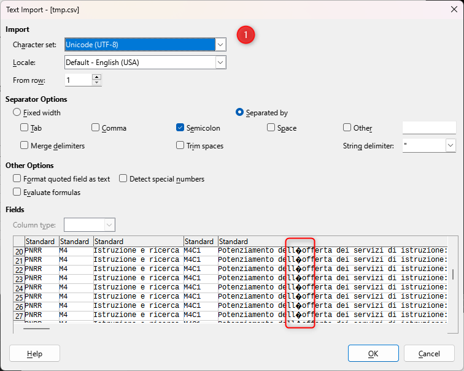

Il 16 giugno 2023 sono stati aggiornati diversi dati pubblicati nel “catalogo open data” di Italiadomani (il sito ufficiale del Piano Nazionale di Ripresa e Resilienza).
Una cosa che non ci piace è che la pubblicazione non sia stata annunciata nella sezione delle News e che in alternativa non ci sia nemmeno un modo per iscriversi a degli avvisi automatici (come un Feed RSS).
Noi ne abbiamo avuto riscontro perché abbiamo costruito un piccolo sistema di monitoraggio di questa sezione.
Tra i dati aggiornati quelli da fonte ReGiS, ovvero il sistema creare per fare adempiere le amministrazioni agli obblighi di monitoraggio.
È una delle fonte dati di maggiore interesse, perché è quella di maggiore dettaglio. A seguire riportiamo alcune note sulla collezione di dati denominata “Universo ReGiS - Progetti”:
riporta per ciascuna misura o sub-misura del Piano il corredo informativo di tutti i progetti identificati tramite CUP/CLP presenti sulla piattaforma ReGiS alla data di estrazione, indipendentemente dalla sottomissione e dall’esito del processo di validazione, ossia dal consolidamento periodico delle informazioni tramite controlli automatici di coerenza e tramite le opportune verifiche amministrative poste in essere dalle Amministrazioni Titolari.
Questo aggiornamento di giugno era previsto nella recente “Relazione sullo stato di attuazione del Piano nazionale di ripresa e resilienza (PNRR), aggiornata al 31 maggio 2023” (si veda la sezione “5.4.8 Italiadomani: i prossimi passi”).
Note sull’aggiornamento
Questi alcuni punti di interesse sul dataset “Universo ReGiS - Progetti”:
- la “data di osservazione”, la data di estrazione, è il 13 giugno 2023. Era giorno 1 marzo 2023;
- da circa 140.000 record a circa 200.000;
- da circa 130.000 codici CUP a circa 190.000;
- da circa 121 miliardi di € di finanziamento totale a circa 150;
- è stata aggiunta la colonna “Finanziamento Stato - FOI”, ovvero i finanziamenti correlati al Fondo per l’avvio di opere indifferibili (FOI) (vedi art.26 decreto-legge 17 maggio 2022, n. 50);
- rimosse circa 7.000 righe di progetti, rimossi quindi circa 7.000 codici CUP;
- circa 90.000 righe preesistenti sulle quali è intervenuta una modifica/correzione dei contenuti.
Quest’ultimo è un punto chiave. Ci sono modifiche in quasi tutte le colonne, da quelle con i Codici Fiscali, a quelle sui valori di finanziamento, da quelle con la descrizione di dettaglio a quelle con i codici CUP.
Queste modifiche, correzioni e integrazioni, sono un buon segnale.
La mappa su dati ReGiS
La nostra mappa per esplorare i dati ReGiS di Italiadomani, non è ancora stata aggiornata. Non appena fatto ne daremo notizia.
Criticità
Una prima lettura e analisi del dataset “Universo ReGiS - Progetti”, ha fatto emergere alcune criticità. Ne elenchiamo alcune, che ci sembra utile condividere, a seguire.
Mancanza di campi/colonne che consentano di monitorare l’attuazione dei progetti
Questo è un importante aggiornamento in termini numerici, e consentirà di avere una visione più completa dei progetti. Ma non è ancora possibile monitorarne l’attuazione , perché mancano ancora dei campi/colonne che consentano di farlo.
Variazioni non documentate
Come detto all’inizio non è stato dato alcun tipo di annuncio dell’aggiornamento. E non è presente quindi alcuna nota sul cambio di schema e/o sulle modalità di rappresentazione del dato. Due esempi di tantissimi:
- è stata aggiunta una colonna;
- è stato scelto di rappresentare un codice non più come
30008ma come030008(Codice Locale Progetto), da3a03(CUP Codice Natura).
Per questo secondo punto, ci sono moltissimi casi. Sono variazioni che possono essere giuste e correttive, ma senza essere documentate rischiano di “rompere” i processi di analisi e trasformazione dei dati, progettati su vecchi schemi e rappresentazioni dei dati.
Chi si occupa della pubblicazione dei dati su Italiadomani dovrebbe fare come è stato fatto dalla Protezione Civile per i dati COVID-19: documentare le variazioni e farlo con un po’ di anticipo rispetto alla data di pubblicazione.
Righe errate
Ci sono alcune righe totalmente errate. Si riconoscono facilmente perché iniziano per ";. Sotto un esempio in cui - per chi conosce il dataset - è evidente come sia errato l’ordinamento delle colonne, ma tutti possono rendersi conto di quello strano elenco di ; a fine cella.
";Attivo;03;REALIZZAZIONE DI LAVORI PUBBLICI (OPERE ED IMPIANTISTICA);99;ALTRO;05;INFRASTRUTTURE SOCIALI;11;BENI CULTURALI;096;RESTAURO E RIQUALIFICAZIONE DI BENI CULTURALI;in attesa di acquisizione;PROGETTO LOCALE DI RIGENERAZIONE CULTURALE E SOCIALE DAL TITOLO UNA TERRA PER VIVERCI FINALIZZATO ALLA RIGENERAZIONE E VALORIZZAZIONE DELLE FRAZIONI DI CASAROLA E RIANA E DEL PARCO LETTERARIO ATTILIO BERNARDO E GIUSEPPE BERTOLUCCI*VIA VARIE LOCALITA'*;INTERVENTO CHE NON COSTITUISCE AIUTO DI STATO;0,00;0,00;0,00;0,00;0,00;0,00;0,00;0,00;0,00;67100,00;0,00;388067,50;455167,50;455167,50;455167,50;NON AVVIATO;COMUNE DI MONCHIO DELLE CORTI;00341170348;No;;;;;13/06/2023;No";;;;;;;;;;;;;;;;;;;;;;;;;;;;;;;;;;;;;;;;;;;;;;;;;;Queste righe errate, che sembrano “mal posizionate”, potrebbero essere quelle che generare dei record con diverse colonne le cui celle non sono valorizzate.
Codifica dei caratteri non documentata
I dataset pubblicati sono corredati da alcuni metadati: tra questi non è presente la codifica dei caratteri. Per un file CSV non è possibile determinare la codifica dei caratteri automaticamente poiché non è una informazione scritta al suo interno. Per questo motivo, è necessario specificare manualmente la codifica dei caratteri durante l’apertura o la manipolazione del file.
Altrimenti si rischia di avere problemi di lettura dei dati.

La codifica di “Universo ReGiS - Progetti” sembra essere windows-1252.
Nome colonna errato
Al campo Descrizione Missione è associato il nome Descrizione Mssione (è saltata la prima i di “Missione”).
Variazione valore etichetta
I valori contenuti in colonne come Amministrazione Titolare sono delle stringhe, ma svolgono il ruolo di “etichette” di classificazione. Se si fanno delle variazioni, dovrebbero essere documentate (vedi sopra).
Ad esempio nel campo Amministrazione Titolare si è passati da MIN AGRIC. SOVRANITA' ALIM. E FORESTE a MIN AGRIC. SOVRANITÀ ALIM. E FORESTE (si noti il passaggio da A' a À).
Per fortuna c’è anche il Codice Fiscale dell’Amministrazione Titolare, che fa da codice identificativo.
Troncature dei titoli di progetto
Ad esempio per il CUP B11B21003170001 il titolo è stato troncato ed è passato da a REALIZZAZIONE DI IMPIANTI PER LA PRODUZIONE DI ENERGIA ELETTRICA DA FONTE RINNOVABILE ED IN PARTICOLARE DA FONTE FOTOVOLTAICA PR a REALIZZAZIONE DI IMPIANTI PER LA PRODUZI.
Non è l’unico caso.